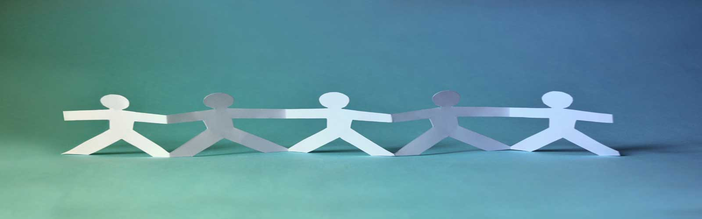

Fisioterapi merupakan ilmu yang menitikberatkan untuk menstabilkan atau memperbaiki gangguan fungsi alat gerak/fungsi tubuh yang terganggu yang kemudian diikuti dengan proses/metode terapi gerak. Menurut Keputusan Menteri Kesehatan Republik Indonesia No.778 Tahun 2008 tentang Pedoman Pelayanan Fisioterapi di Sarana Kesehatan, fisioterapi adalah suatu pelayanan kesehatan yang ditujukan untuk individu dan atau kelompok dalam upaya mengembangkan, memelihara, dan memulihkan gerak dan fungsi sepanjang daur kehidupan dengan menggunakan modalitas fisik, agen fisik, mekanis, gerak, dan komunikasi. Fisioterapi dapat melatih pasien dengan olahraga khusus, penguluran dan bermacam-macam teknik dan menggunakan beberapa alat khusus untuk mengatasi masalah yang dihadapi pasien yang tidak dapat diatasi dengan latihan–latihan fisioterapi.
Terapi Okupasi adalah bentuk layanan kesehatan kepada masyarakat atau pasien yang mengalami gangguan fisik dan atau mental dengan menggunakan latihan/aktivitas mengerjakan sasaran yang terseleksi(okupasi) untuk meningkatkan kemandirian individu pada area aktivitas kehidupan sehari-hari, produktivitas dan pemanfaatan waktu luang dalam rangka meningkatkan derajat kesehatan masyarakat. Tujuan utama dari Okupasi Terapi adalah memungkinkan individu untuk berperan serta dalam aktivitas keseharian. Okupasi terapis mencapai tujuan ini melalui kerja sama dengan kelompok dan masyarakat untuk meningkatkan kemampuan mereka untuk terlibat dalam aktivitas yang mereka inginkan, butuhkan, atau harapkan untuk dikerjakan, serta dengan mengubah aktivitas atau lingkungan yang lebih baik untuk mendukung keterlibatan dalam aktivitas.
Terapi wicara adalah terapi untuk membantu seseorang menguasai komunikasi bicara dengan lebih baik. Terapi ini biasa diberikan kepada:
PLB (Pendidikan Luar Biasa)
Pembelajaran yang dirancang untuk merespon atau memenuhi kebutuhan anak dengan karakteristik yang unik dan tidak dapat dipenuhi oleh kurikulum sekolah yang standar (biasa). Pengertian Pendidikan Luar Biasa bila dioperasionalkan di lapangan dapat diartikan sebagai Kelas Khusus, program khusus dan atau layanan khusus yang dirancang untuk memenuhi kebutuhan pendidikan Anak Luar Biasa.
Memberikan berbagai multivitamin kepada semua anak khususnya yang dalam kondisi kurang fit.
Melakukan program peningkatan gizi bagi anak-anak yang mengalami kekurangan gizi dan melakukan pemantauan terhadap program tersebut.
Melakukan terapi atau pengobatan rutin untuk anak yang mengalami kejang.
Pengobatan untuk anak-anak yang terserang penyakit seperti batuk, pilek, demam dan sebagainya.
PLB (Pendidikan Luar Biasa)
Pembelajaran yang dirancang untuk merespon atau memenuhi kebutuhan anak dengan karakteristik yang unik dan tidak dapat dipenuhi oleh kurikulum sekolah yang standar (biasa). Pengertian Pendidikan Luar Biasa bila dioperasionalkan di lapangan dapat diartikan sebagai Kelas Khusus, program khusus dan atau layanan khusus yang dirancang untuk memenuhi kebutuhan pendidikan Anak Luar Biasa.
Thomas Huis Steenwijk adalah sebuah organisasi berupa rumah perawatan untuk para penyandang disabilitas di Belanda. Melalui salah satu anggota American Women Association, Diane White memperkenalkan Yayasan Heesu kepada Mrs. Henriette Koenen (Baju Hitam paling kanan) yang merupakan salah satu pengurus dari Thomas Huis. Setelah berdiskusi dengan pengurus Thomas Huis lainnya, akhirnya beliau membawa kabar baik untuk membantu Yayasan Heesu.
Thomas Huis memberikan donasi setiap bulannya untuk menunjang sebagian operasional yayasan. Mereka pun tertarik dengan program tahunan Yayasan Heesu untuk juga memberikan bantuan kepada masyarakat sekitar yang membutuhkan. Karena masyarakat juga merupakan keluarga besar Yayasan Heesu yang patut diberikan penghargaan atas kebaikan mereka yang juga sudah mengganggap Yayasan Heesu sebagai bagian dari Desa Situsari.
Setelah berdiskusi dengan Mrs. Henriette Koenen, kami sepakat untuk menyelenggarakan open house dengan mengundang masyarakat sekitar dan menyajikan jajanan gratis, pembagian sembako gratis serta panggung sederhana untuk menampilkan kebolehan anak-anak dan karyawan Yayasan Heesu serta juga mengundang dan menampilkan pertunjukan artis cilik Sasha. Acara tersebut diselenggarakan pada tanggal 22 Februari 2014, segenap pengurus Thomas Huis dari Belanda datang langsung untuk menyaksikan acara open house tersebut. Selain dihadiri oleh para tamu asing, pengurus Yayasan Heesu dari PT. Jaya Samudera Karunia juga turut menghadiri Yayasan Heesu.
Thomas Huis Steenwijk adalah sebuah organisasi berupa rumah perawatan untuk para penyandang disabilitas di Belanda dan telah membantu Yayasan Heesu sejak tahun 2013. Sejak tahun pertamanya menjadi donatur Yayasan Heesu, Thomas Huis telah menyelenggarakan beberapa kegiatan sosial untuk masyarakat sekitar. Setelah tahun sebelumnya Thomas Huis menyelenggarakan open house Yayasan Heesu untuk masyarakat sekitar. Tahun 2015 ini, Thomas Huis mengadakan pembagian sembako gratis bagi masyarakat sekitar dan karyawan Yayasan Heesu. Hal ini sebagai bentuk penghargaan bagi masyarakat dan karyawan karena selama ini telah membantu Yayasan Heesu dalam merawat anak-anak penyandang disabilitas.
Seoul Chamber Society (SCS) merupakan grup musik orksetra yang berasal dari Korea Selatan. Mereka terdiri dari para pemusik professional ber-genre klasik. Kedatangan SCS merupakan serangkaian dari Korea Festival yang diselenggarakan oleh Korea Foundation. Saat itu, Yayasan Heesu menjadi salah satu yayasan yang dipilih dan dihubungi oleh pihak Korea Foundation untuk menjadi tempat pegelaran orksetra sederhana sebagai bentuk social charity dalam serangkaian acara Korea Festival tahun 2013. Acara ini juga dihadiri oleh perwakilan pengurus Yayasan Heesu, PT. Jaya Samudera Karunia.
Setiap tahunnya, Yayasan Heesu memiliki program untuk berbagi kepada masyarakat sekitar yang membutuhkan. Dalam rangka Hari Raya Idul Adha, Yayasan Heesu selalu mengadakan kegiatan kurban dan paket daging kurban langsung dibagikan kepada masyarakat sekitar. Hewan kurban yang terdiri dari kambing maupun sapi berasal dari para donatur yang ingin berkurban, dan kegiatan pemotongan dilakukan oleh pemuka agama dan tokoh masyarakat setempat.
Yayasan Heesu juga selalu menyisihkan program tahunannya untuk masyarakat sekitar. Selain mengadakan kurban, pembagian sembako gratis, kami juga berusaha untuk memberikan pengobatan secara gratis bagi masyarakat yang membutuhkan. Tahun 2013 ini, yayasan heesu bekerjasama dengan Organisasi Hilal Ahmar Jakarta dan Baitul Maal Abdirrahman bin Auf Cabang Jakarta dalam memberikan pengobatan gratis bagi masyarakat. Tim pengobatan terdiri dari dokter dan pihak yang berhubungan dengan medis lainnya bekerjasama dengan karyawan yayasan heesu salah satunya adalah perawat yayasan heesu.